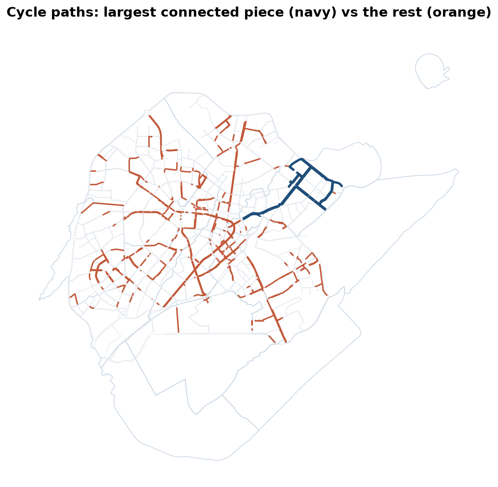
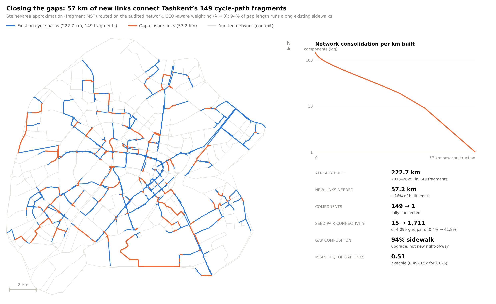
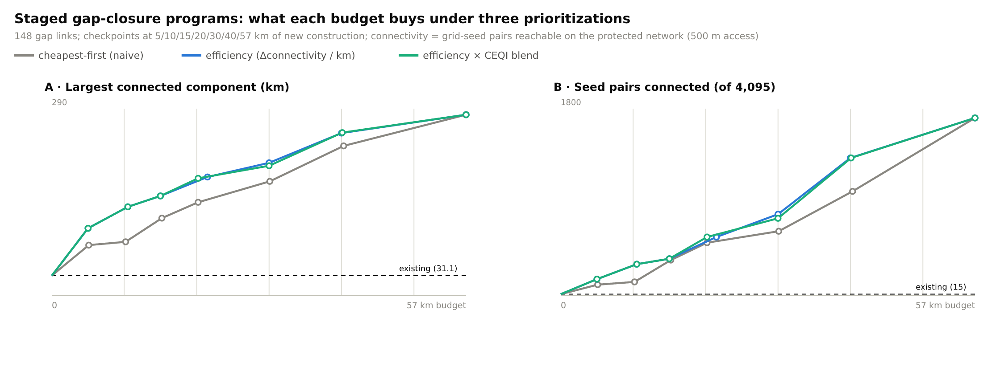

LEC8 · Urban Transport Systems Planning and Design · TSTU · Prof. J. Sodikov
1 / 23
What you will be able to do after today
Treat walking, cycling, public transport, car and freight as layered networks
Find nodes, missing links and barriers that break continuity
Use connectivity, not kilometres, to prioritise new links
Build a low-cost and a structural alternative under spatial constraints
2 / 23
This lecture treats walking, cycling, public transport, car and freight as separate networks laid on top of each other. You will learn to find the nodes, missing links and barriers that break a network's continuity. You will see why the connections a new link creates matter more than its kilometres. Finally, you will build a low-cost and a structural alternative within the space that streets allow.
One city, several networks
Each mode has its own network and its own hierarchy
Walking and cycling: dense, short links; continuity matters most
Public transport: lines and stops on top of the street network
Car and freight: the road hierarchy, with access restrictions
Multimodal design = layers that work together at good transfer nodes
3 / 23
Each mode has its own network with its own hierarchy. Walking and cycling need dense, short links, and continuity matters most for them. Public transport runs lines and stops on top of the street network, while cars and freight use the road hierarchy with some access restrictions. Multimodal design means making these layers work together, joined at good transfer nodes.
Design requirements for a network layer
Coherence: every origin connects to every destination without breaks
Directness: low detours compared with the alternative mode
Safety: conflicts handled at the right level of the hierarchy
Comfort and attractiveness: surface, shade, noise, social safety
These requirements apply to every layer, weighted differently
4 / 23
Every network layer has to meet the same design requirements. Coherence means every origin connects to every destination without breaks, and directness means small detours compared with the alternative mode. Safety means conflicts are handled at the right level of the hierarchy. Comfort and attractiveness cover the surface, shade, noise and social safety. Each layer weighs these requirements differently.
Public transport network structure
Radial networks: one-seat rides to the centre; poor cross-town service
Grid networks: many destinations with one transfer; need high frequency
Transfers are the price of a connected network — frequency makes them acceptable
Ridership goals and coverage goals pull in different directions (Walker)
5 / 23
This slide compares two ways to structure public transport lines. Radial networks give one-seat rides, meaning trips with no transfer, to the centre, but poor service across town. Grid networks reach many destinations with one transfer, but they need high frequency. Transfers are the price of a connected network, and frequent service makes them acceptable. Walker (2008) adds that aiming for high ridership and aiming for wide coverage pull a network in different directions.
Nodes: where the networks meet
Tashkent has 49 metro stations and 2,019 mapped bus stops (OSM)
Yet 74.4% of the city's 585 mahallas have no metro station within a 15-minute walk
A node is only as good as the walking and cycling links that reach it
Design interchanges as part of the network, not as isolated buildings
6 / 23
Nodes are the places where networks meet, such as metro stations and bus stops. OSM shows 49 metro stations and 2,019 bus stops in Tashkent. Yet Ergashova (2026) found that 74.4% of the city's 585 mahallas have no metro station within a 15-minute walk. A station is only as useful as the walking and cycling links that reach it, so design interchanges as part of the network, not as separate buildings.
Missing links and barriers
Canals, rail lines, wide arterials and closed estates cut walking and cycling links
A missing crossing can add hundreds of metres to a short trip
Bo'zsuv canal: pedestrian safety and comfort along and across the canal
Bo'rijar route: a canal-side corridor as a cycling opportunity
Barriers are also opportunities: green corridors along water
7 / 23
Canals, rail lines, wide arterials and closed estates cut walking and cycling links. One missing crossing can add hundreds of metres to a short trip. A study of the Bo'zsuv canal looks at pedestrian safety and comfort along and across the canal. A study of the Bo'rijar route sees a canal-side corridor as a chance for cycling. So a barrier can also become an opportunity, such as a green corridor along the water.
Case: Tashkent's cycling network
Normukhammadov (2026), PhD research supervised at TSTU — field audit, network analysis, gap closure
8 / 23
The next slides follow one Tashkent case: Normukhammadov's PhD research on the city's cycling network, supervised at TSTU. He audited the streets in the field, analysed the network and worked out how to close its gaps. The case shows each step of network design with local data.
The field audit classified 1,021.4 km of streets by the space a cyclist can use. Of that length, 23.4% is dedicated cycle path, 64.8% is sidewalk, and 11.7% is roadway with no cycle or pedestrian provision. So on most of the network, cyclists share space with pedestrians or with traffic. Any cycling design has to start from this mix.
Audit before you design
66.4% of riding exposure in the field survey was on sidewalks
Field audit: 238.7 km of cycle path; OpenStreetMap shows only 108.9 km of cycleway
Open data under-records active-travel infrastructure
Lesson for your project: verify OSM in the field before drawing conclusions
10 / 23
In the field survey, 66.4% of riding exposure, measured as time spent riding, was on sidewalks. The field audit found 238.7 km of cycle path, but OSM maps only 108.9 km of cycleway. So open data under-record infrastructure for walking and cycling, as the data-quality lessons of Week 2 warned. Check OSM in the field for your corridor before you draw conclusions.
Fragmented, not missing

222.7 km of routable cycle path sits in 149 fragments; the largest is 31.1 km.
11 / 23
Tashkent has cycle paths, but they do not form one network. The thesis counted 149 separate fragments in the 222.7 km of routable cycle path, and the largest was 31.1 km long. On the map, the largest connected piece is navy and the other fragments are orange. So most trips cannot stay on protected paths from start to finish.
Why fragmentation matters
Only 4 of 4,095 district-scale seed pairs are linked by protected paths
A network's value grows with connections, not with kilometres
A new metre is worth most when it joins two fragments
Cyclists judge the weakest link on a route, not the average
12 / 23
The thesis placed seed points at district scale to stand in for cycling demand and tested 4,095 pairs of them. Existing protected paths link only 4 of these seed pairs. A network's value grows with the connections it makes, not with its length. So a new metre of path is worth most when it joins two fragments. Cyclists also judge a route by its weakest link, not by its average quality.
Closing the gaps

57.2 km of new links joins everything into one 279.9 km network — 94% by converting sidewalk.
13 / 23
Adding 57.2 km of new links would join all the fragments into one connected network of 279.9 km. About 94% of this new length runs along existing sidewalks, so most gaps can be closed by converting sidewalk space. The main problem of Tashkent's cycling network is therefore missing connections, not missing kilometres.
Method: minimum gap closure
Treat each fragment as a node; the cost of a link is the new length needed
Find the cheapest path between every pair of fragments on the street network
Join all fragments with a minimum spanning tree of those paths
The answer is an upper bound: a better alignment can only reduce it
Same logic works for footway gaps and missing crossings
14 / 23
The method treats each fragment as a node, and the cost of joining two fragments is the length of new path needed. It finds the cheapest path between every pair of fragments on the street network. A minimum spanning tree then joins all the fragments at the lowest total length of those paths. The result is an upper bound, since a better alignment can only make it shorter. The same logic works for footway gaps and missing crossings.
Phasing: build where it connects most

Phase 1: the largest connected network grows 31.1 → 137.8 km for $0.33–3.12 M.
15 / 23
The gap links do not have to be built at once. If the first 10 km are placed where they connect most, the largest connected network grows from 31.1 km to 137.8 km. This first phase would cost between $0.33 M and $3.12 M, depending on the unit costs assumed. Building the links that connect most first gives a large gain from a small first phase.
Kilometres announced or connections delivered?
The city announced 656 km of pedestrian and bicycle lanes in 2020
A full planned network on the audited streets needs 363 km
The full gap-closure programme costs $1.86–17.82 M
Targets in kilometres reward length; targets in connections reward network value
16 / 23
In 2020 the city announced 656 km of pedestrian and bicycle lanes. Yet a full planned network on the audited streets needs 363 km, and the full gap-closure programme costs $1.86 M to $17.82 M. A target in kilometres rewards building length, wherever it goes. A target in connections rewards what makes a network useful.
Developing alternatives under spatial constraints
Low-cost improvement: markings, crossings, kerb ramps, signal changes, sidewalk conversion
Structural change: new links, canal bridges, road diet, dedicated bus lanes
Keep the same study area and the same assessment year for both
State the constraint each alternative removes: width, crossing, gradient, ownership
17 / 23
In the practical you build two alternatives for your corridor. A low-cost improvement uses markings, crossings, kerb ramps, signal changes and sidewalk conversion. A structural change adds new links, canal bridges, dedicated bus lanes or a road diet, which gives traffic lanes to other uses. Keep the same study area and assessment year for both, and state which constraint each one removes: width, crossing, gradient or ownership.
What changes in each alternative
Layer
Low-cost alternative
Structural alternative
Walking
Marked crossings, kerb ramps, shorter signal waits
New canal bridge, removal of barriers
Cycling
Protected lane on converted sidewalk
Continuous protected track on a spine
Public transport
Stop relocation and boarding platforms
Dedicated bus lane with junction priority
Car
Turn restrictions, speed management
Road diet: lanes reallocated
Freight
Loading time windows
Bypass routing via the ring road
18 / 23
The table shows what each alternative could change in each network layer. For walking, a low-cost step is a marked crossing with a shorter signal wait, while a structural step is a new canal bridge. For public transport, the choice is between moving stops and adding boarding platforms, or building a bus lane with priority at junctions. In P4 you pick one or more rows for each of your two alternatives.
Choosing between options: multi-criteria ranking
Sodikov et al. combined a simulated cyclist survey with TOPSIS to rank network options in Tashkent
Criteria such as safety, continuity, comfort and cost are weighted and compared
Ranking makes trade-offs explicit — the weights must be justified
Week 14 builds a full appraisal matrix with sensitivity tests
19 / 23
When there are several options, a multi-criteria method can rank them. Sodikov and colleagues used a simulated survey with TOPSIS, a method that ranks options against weighted criteria, to compare cycling network options in Tashkent. Criteria such as safety, continuity, comfort and cost are weighted and compared. This makes trade-offs visible, but the weights must be justified. Week 14 returns to this study and builds a full appraisal with sensitivity tests.
Discussion
With 10 km of construction for your corridor, which links would you build — and how would you show they matter?
Answer with a connection argument, not a length argument.
20 / 23
Imagine you can build 10 km of new links for your corridor. Decide which links you would build, and show why they matter by the connections they create, not by their length. This is the same argument as the gap-closure method in this lecture.
Key takeaways
Design networks as coupled layers joined at good nodes
Continuity and missing links decide whether a network works
Prioritise links by the connections they create
Every alternative needs a stated constraint, cost range and beneficiaries
21 / 23
Design networks as layers that work together and meet at good nodes. Whether a network works depends on its continuity and on its missing links. Choose which links to build by the connections they create. Every alternative should state the constraint it removes, its cost range and who benefits from it.
References
TU Delft, Department of Transport & Planning. CIEM6250 Transport Systems Design — units B-1 Network Design, B-2 Service Design, B-3 Physical Infrastructure Management, B-4 Traffic Operations Management (Smart Public Transport Lab education page; MSc Civil Engineering TTE track). https://www.tudelft.nl/citg/over-faculteit/afdelingen/transport-planning/research/labs/smart-public-transport-lab/education
van Nes, R. (2002). Design of Multimodal Transport Networks: A Hierarchical Approach (PhD thesis, TRAIL T2002/5). Delft University of Technology. https://research.tudelft.nl/en/publications/design-of-multimodal-transport-networks-a-hierarchical-approach
Global Designing Cities Initiative & NACTO (2016). Global Street Design Guide. Island Press. https://globaldesigningcities.org/publication/global-street-design-guide/
Wilson, N., Sánchez-Martínez, G., & Nassir, N. (2017). 1.258J/11.541J Public Transportation Systems, Spring 2017. MIT OpenCourseWare. https://ocw.mit.edu/courses/1-258j-public-transportation-systems-spring-2017/
Walker, J. (2008). Purpose-driven public transport: creating a clear conversation about public transport goals. Journal of Transport Geography, 16(6), 436–442. https://ses.library.usyd.edu.au/handle/2123/6057
Ergashova, M. Z. (2026). 15-minute walkability of Tashkent mahallas — dissertation defence presentation, 14 Oct 2026 (in Uzbek). Tashkent State Transport University.
Sodikov, J. I., et al. (2024). Navigating the urban terrain: enhancing pedestrian safety and comfort in Tashkent's Bo'zsuv canal area. Inzhener. https://engineer.tstu.uz
Sodikov, J. I., et al. (2024). Cycling the Bo'rijar route: infrastructure innovation for Tashkent's sustainable transit. Inzhener. https://engineer.tstu.uz
Normukhammadov, A. (2026). Pedalling Towards Sustainability: Developing an Integrated Bicycle Network for Enhanced Urban Mobility in Tashkent City (PhD thesis draft; supervisor J. I. Sodikov). Tashkent State Transport University.
MIT Department of Urban Studies and Planning. 11.540 Urban Transportation Planning and Policy (J. Aloisi). MIT Course Catalog, Course 11 subjects. https://catalog.mit.edu/subjects/11/
Sodikov, J. I., et al. (2026). Improving urban bicycle network planning: evidence from a survey and TOPSIS analysis in Tashkent. Inzhener. https://engineer.tstu.uz